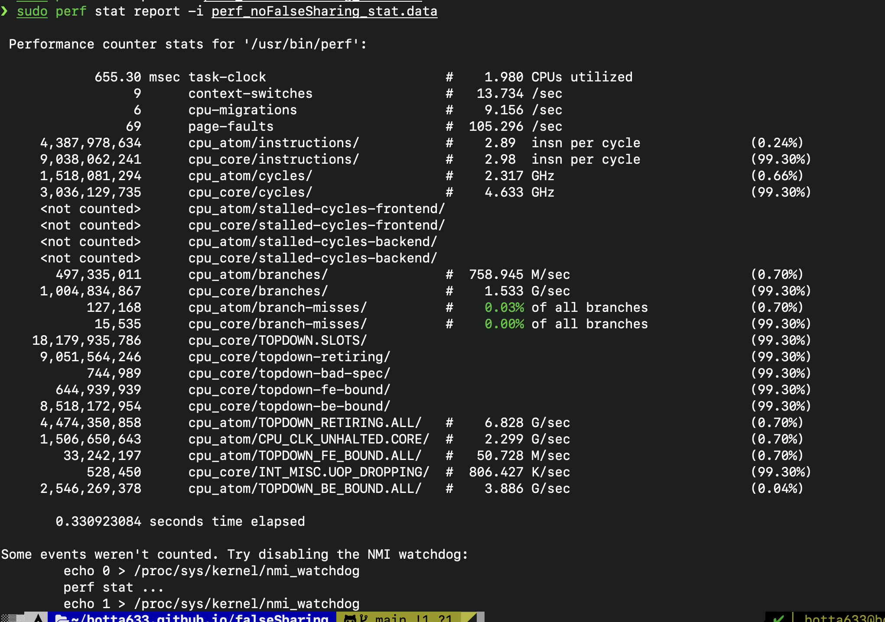
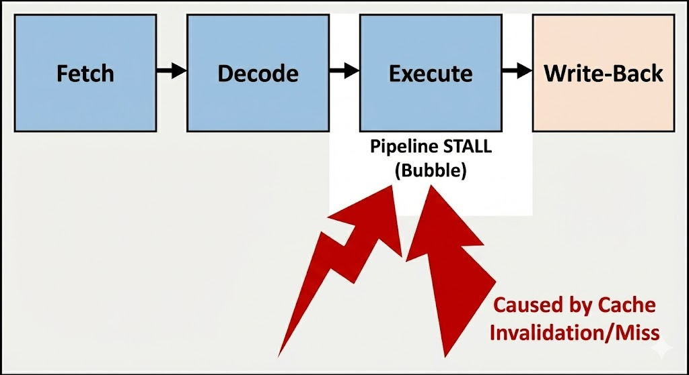
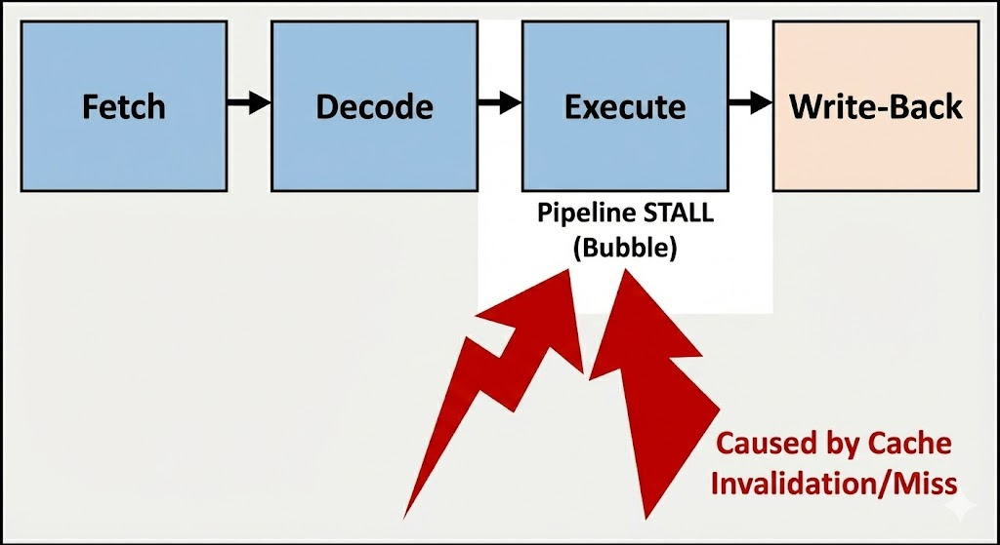

Executive Summary
I recently diagnosed a concurrency bug where splitting a workload across two threads resulted in a 10x performance degradation compared to a single thread. The root cause was not logic contention (locks), but hardware contention known as False Sharing. By understanding the CPU's cache coherency protocol and padding data structures to align with 64-byte cache lines, we restored the expected parallel speedup.
The Mystery: Negative Scaling
We intuitively expect that adding more cores to a parallelizable task will reduce execution time.
However, the numbers told a different story. I ran perf stat on both versions to investigate.
❌ The Failure (False Sharing)

Note the incredibly low IPC (Instructions Per Cycle) of 0.15. The CPU is stalled, waiting on memory 85% of the time.
✅ The Fix (Padded)
With padding, IPC jumps to 2.50. The execution time drops drastically as the cores work independently.
The Hardware Reality: Cache Lines & MESI
To understand why this happens, we must look at the hardware. CPUs do not access memory one byte at a time; they fetch data in chunks called Cache Lines (typically 64 bytes on x86).

Even though Thread A only modifies variable x and Thread B only modifies variable y,
if they sit on the same cache line, the CPU treats them as a single unit. To maintain data consistency,
the CPU uses the MESI Protocol (Modified, Exclusive, Shared, Invalid).
The Golden Rule: To write to a cache line, a core must have Exclusive Ownership of that line. It must invalidate copies of that line in all other cores.
The "Pipeline Stall" Breakdown
This is where performance dies. It's not just about network traffic on the bus; it's about the CPU pipeline freezing. Here is the micro-architectural timeline of a "False Sharing" event:
 

- Step 1: The Write Request. Core 1 tries to write to
x. It checks its L1 cache and sees the line is inSharedstate (Read-Only). - Step 2: The Stall. The Store Buffer cannot drain because the core doesn't own the line. The CPU Pipeline Stalls. Execution stops.
- Step 3: The RFO (Request For Ownership). Core 1 broadcasts a signal: "I need this line! Invalidate your copies!"
- Step 4: The Flush. Core 2 (who currently has the line "Modified" because it just wrote to
y) is forced to pause, flush its data to the bus, and mark its own cache line asInvalid. - Step 5: The Transfer. The data travels across the interconnect (UPI/Infinity Fabric). This takes 100+ cycles compared to the ~4 cycles of an L1 hit.
The Smoking Gun: HITM Events
To confirm my suspicion of False Sharing, I used perf c2c (Cache-to-Cache).
This tool tracks "HITM" (Hit Modified) events—where a core loads data that was modified in another core's cache.
If the data is truly shared (like a lock), some HITM is expected. But for independent variables, this column should be near zero. Seeing 90%+ here is the definitive proof of false sharing.
Code Reference: The Fix
The solution is to forcibly separate the variables into different cache lines using padding.
// The Problematic Struct
struct BadData {
long x; // 8 bytes
long y; // 8 bytes (Lives in the same 64-byte line as x)
};
// The Fixed Struct
struct GoodData {
long x;
char padding[64]; // Force 'y' to the next cache line
long y;
};
Learnings & Next Steps
Performance engineering isn't just about Big O notation. It's about hardware sympathy. When variables are independent in logic but coupled in hardware, you pay the price of distributed consensus (MESI) on every single instruction.
- Always check
perf c2cwhen multithreaded performance doesn't scale. - Use
alignas(64)in C++ or__attribute__((aligned(64)))in C to handle this automatically. - Be wary of arrays of counters or locks; they are prime candidates for false sharing.